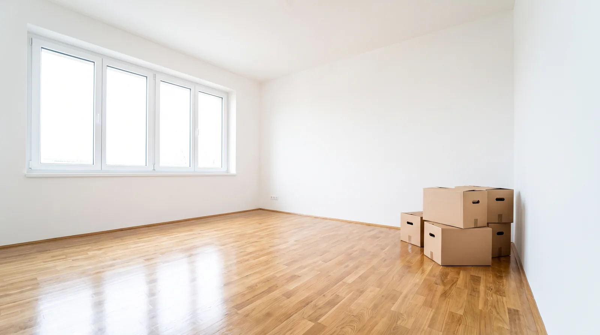

Umzugsmalerei Basel
Schnelle, termingerechte Renovation von Mietwohnungen bei Auszug – für Mieter und Verwaltungen.

Termindruck bei der Wohnungsübergabe? Wir übernehmen
Beim Auszug zählt oft jeder Tag: Der Übergabetermin steht fest, und die Wohnung muss bis dahin wieder in einwandfreiem Zustand sein. Wir planen Umzugsmalerei-Aufträge deshalb mit kurzen Vorlaufzeiten und straffem Zeitplan, damit Sie Ihren Termin bei der Verwaltung sicher einhalten.
Für Liegenschaftsverwaltungen sind wir zudem ein fester Ansprechpartner bei wiederkehrenden Mieterwechseln – mit unkomplizierter Auftragsabwicklung und verlässlichen Terminen.
Wohnungsübergabe-Renovation
Kompletter Neuanstrich der Wohnung passend zum Übergabeprotokoll.
Kurzfristige Terminplanung
Flexible Einsatzplanung, auch bei kurzfristig anberaumten Übergabeterminen.
Ansprechpartner für Verwaltungen
Fester Ansprechpartner für Liegenschaftsverwaltungen bei laufenden Mieterwechseln.
Kleinreparaturen vor Übergabe
Ausbessern kleinerer Löcher und Kratzer, damit die Wände übergabebereit sind.
Häufige Fragen zur Umzugsmalerei
Wie kurzfristig kann eine Umzugsmalerei organisiert werden?
Je nach aktueller Auslastung können wir Umzugsmalerei-Aufträge oft innerhalb weniger Tage einplanen. Melden Sie sich am besten so früh wie möglich, sobald der Übergabetermin feststeht, damit wir genug Zeitfenster für eine saubere Ausführung einplanen können.
Wer zahlt die Renovation beim Auszug – Mieter oder Vermieter?
Das ist im Mietvertrag beziehungsweise in der Abnutzungstabelle der Verwaltung geregelt und hängt vom Zustand der Wohnung sowie der Nutzungsdauer ab. Im Zweifel klären Sie das am besten direkt mit Ihrer Hausverwaltung, bevor Sie den Auftrag erteilen.
Muss ich beim Auszug in der ursprünglichen Farbe streichen?
Bei auffälligen oder sehr kräftigen Wandfarben verlangen Verwaltungen meist einen neutralen Anstrich zurück. Bei üblichen hellen Farbtönen ist das seltener ein Thema. Klären Sie die genaue Vorgabe am besten vorab mit Ihrer Verwaltung ab, dann richten wir den Anstrich danach aus.
Bereit für Ihr Projekt?
Rufen Sie uns an oder fordern Sie eine kostenlose Offerte an – wir melden uns kurzfristig, besonders wichtig bei nahendem Übergabetermin.